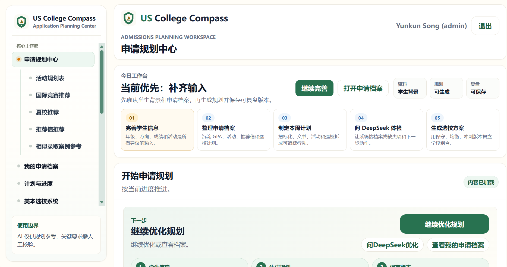

StudentFitRAGAgentPlanTestExportLoop
student.signal.map()school.fit.score()rag.education.merge()agent.plan.route()tests.cover.advising()export.application.pack()
Work / Evidence-Led Case Studies
项目证明与可检查证据
Work 页只负责证明项目交付：先看 US College Compass，再看两个核心项目，最后看仓库、测试和截图证据。
Flagship product proof
主案例先给可视证据，再解释问题、系统、仓库和验证结果；后两个案例只作为交付能力补充。
AI 产品经理 / 独立开发
AI 美本规划工作台
面向国际生及家庭的申请规划平台，整合学生档案、DeepSeek 自动规划、资源库 RAG、院校百科、活动质量检查、导出和后台认证。
- DeepSeek 一键生成 10 项 Common App 活动规划并解析进表格
- RAG 问答连接学生备份、资源库、院校百科和申请档案
- 72 个测试文件、RAG golden set、安全扫描和性能 smoke 形成工程证据
GitHub repo
真实截图
CI gate
p95 38ms

Student Profile
Student background data becomes the stable context for planning decisions.
Open GitHub
内容增长产品 / AI 文案工作流
小红书文案写作大师
把内容 brief、选题、标题、正文、标签和发布建议做成可运行的 AI 生成工作台，用来验证搜索意图、内容结构和私信转化表达。
- Next.js MVP 覆盖标题、正文、标签、发布建议和历史记录
- 无 API Key 时提供 mock 兜底，便于完整演示
- 与 20,000+ 内容浏览、搜索曝光和私信转化方法衔接
BriefTitleBodyTagsPublishDM
企业级 AI 工作流 / 招聘评估
AI Recruiting Assistant
本地优先的招聘工作流应用，覆盖职位标准、简历解析、产品经理简历评分、面试指南、结果计算、审计与公平性支持。
- 18 个测试文件覆盖解析、评分、面试、审计和模型连接
- 用户自有模型密钥，无隐藏平台兜底
- 明确保留人工最终决策，避免 AI 分数成为唯一依据
resume.parse()rubric.score()interview.guide()fairness.audit()
human.review()final.result()model.connect()export.audit()
Resume parse + score
Interview guide + weights
Audit fairness support
Human Review final decision
Repository evidence
GitHub 卡片不只是外链，而是把项目简介、技术范围和验证证据放在同一个扫描面上。
More evidence
如果你需要更长尾的证明，再进入 Novel 和 Archive；它们不作为 Work 页的主要判断路径。